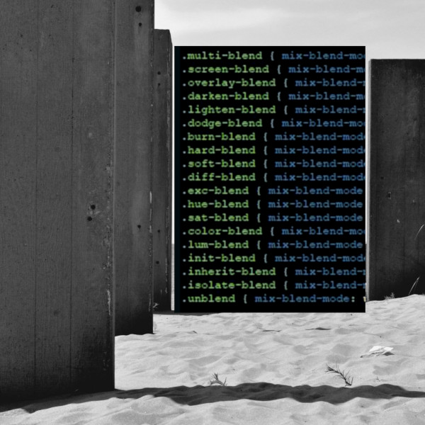
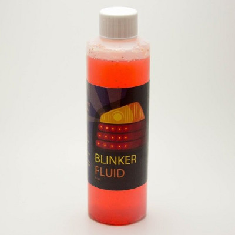
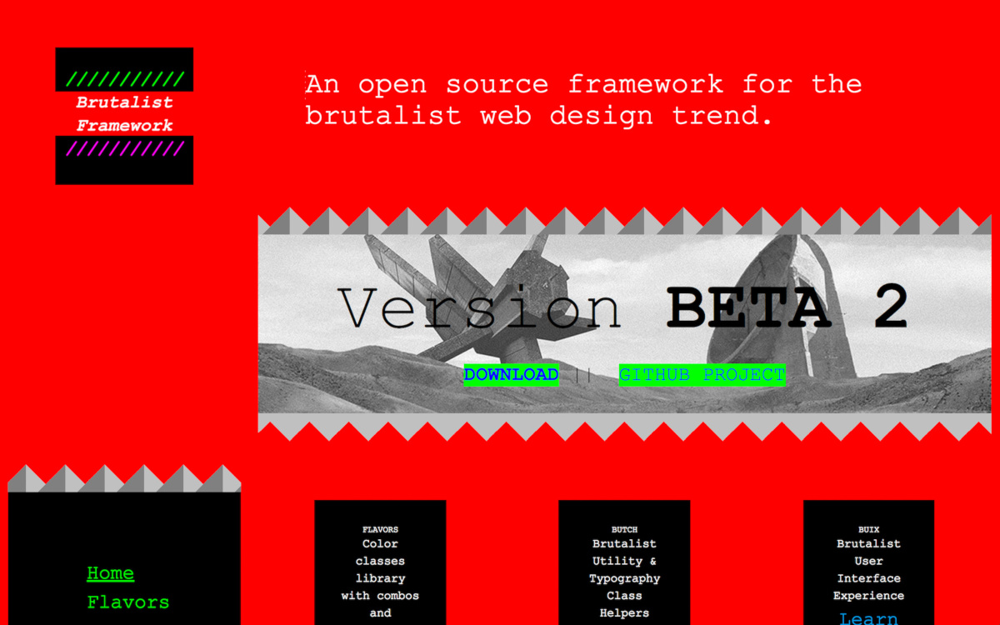

Blog Feed template is ideal for either multi- or single-user microblogging! This template is fully responsive.

Gelora G.
posted at 12:21 am
See more boilerplate templates!
Just a gallery caption about programming with blinker fluid and brutalist architecture.


Gelora G.
posted a video at 11:11 am
Watch this video:
Gelora G.
posted at 11:55 am
I'm headed out to lunch!
Can't sleep. Contemplating concrete aesthetics.
